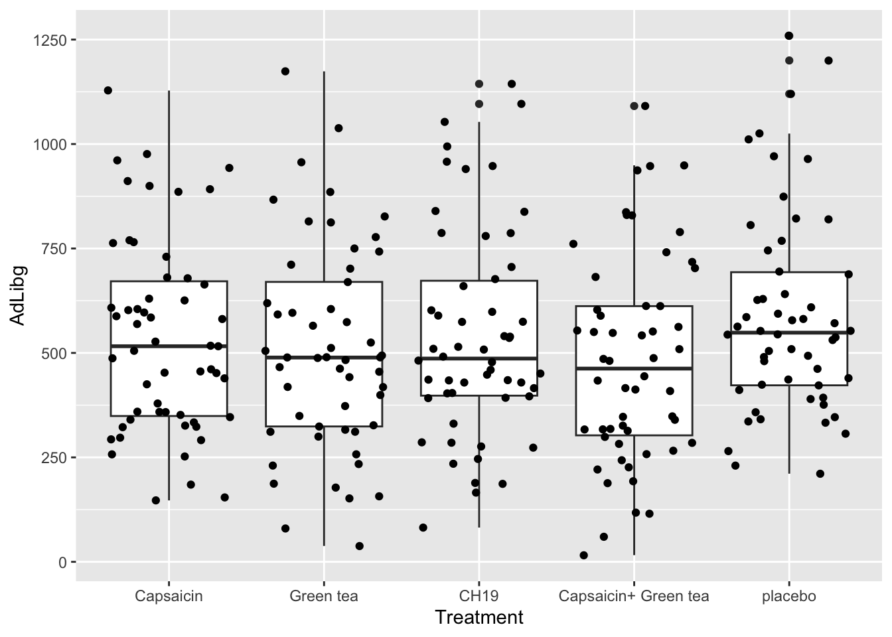

Chapter 15 Scatter plots
Lets plot the consumption as a function of the answers to the liking-scale questions of the survey, and split it into day and type of vegetable. If you think about it, it is pretty many plots, but the ggplot2 functionality facet_wrap() on a long format data frame does it in few lines:
Surveylong_buffet %>%
filter(!is.na(StationName )) %>%
mutate(question2 = question %>% substr(1,34)) %>% # The label is to long, so lets just represent the first 30 letters.
ggplot(data = ., aes(answnum,Consumption, color = factor(Day))) +
geom_point() +
stat_smooth(se = F, method = lm) +
stat_cor() +
facet_grid(question2 ~ StationName) +
theme_bw() + theme(legend.position = 'bottom')## `geom_smooth()` using formula 'y ~ x'
kable(Surveyscales, caption = 'Just a table to have what the 7point likert scale numbers mean')| answ | number |
|---|---|
| A. Strongly disagree | 1 |
| B. Disagree | 2 |
| C. More or less disagree | 3 |
| D. Neither agree nor disagree | 4 |
| E. More or less agree | 5 |
| F. Agree | 6 |
| G. Strongly agree | 7 |
Get this stuff to work, and try to interpret what you see: which factors seems important for the portion size ( Consumption )?
The summary-stats in the scatter plots above: What is this? How is it interpreted?